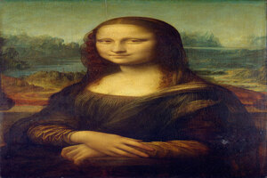

Informacje na temat obrazu:
Krzyk (norw. Skrik) – obraz ekspresjonistyczny namalowany w 1893 r. przez norweskiego artystę Edvarda Muncha.
Wielu krytyków sztuki uznało, że Krzyk to największe dzieło Muncha. Ich zdaniem obraz przedstawia współczesnego człowieka przeszytego bólem egzystencjalnym.
Krajobraz w tle przedstawia fiord w pobliżu Oslo, widoczny ze wzgórza Ekeberg. Obrazowi nadawano też tytuł Płacz.
Krzyk, obok takich obrazów, jak Mona Lisa Leonarda da Vinci czy Słoneczniki Vincenta van Gogha,
należy do najbardziej znanych obrazów na świecie. Jest uważany za arcydzieło ekspresjonizmu.
Powróć do góry

Informacje na temat obrazu:
Madonna z Krużlowej – gotycka rzeźba przedstawiająca Matkę Boską z Dzieciątkiem. Powstała około 1410 roku.
Nazwa dzieła wywodzi się z miejscowości Krużlowa Wyżna w Małopolsce, gdzie rzeźba znajdowała się do roku 1899. Wówczas została nabyta przez Muzeum Narodowe w Krakowie,
w którym znajduje się do dnia dzisiejszego.
Autor dzieła jest nieznany. Nie wiadomo nic na temat jej proweniencji i dokładnego czasu powstania (powszechnie przyjmuje się początek XV wieku).
Być może nie została wykonana jako figura o charakterze kultowym,
lecz stanowiła główną dekorację retabulum ołtarzowego w jednym z krakowskich kościołów.
Powróć do góry

Informacje na temat obrazu:
Dama z gronostajem[1][2], Portret damy z gronostajem[3] (zwyczajowo Dama z łasiczką) (wł. Dama con l'ermellino) – obraz autorstwa Leonarda da Vinci namalowany około 1489 roku,
wykonany w technice olejnej, z użyciem tempery, na desce orzechowej o wymiarach 54,7 na 40,3 cm. Przedstawia Cecylię Gallerani, kochankę księcia Ludwika Sforzy.
Znajduje się w zbiorach Muzeum Książąt Czartoryskich w Krakowie. Jest jednym z najcenniejszych muzealiów i jedynym dziełem Leonarda da Vinci w Polsce.
W 2011 podczas podróży po Europie został ubezpieczony na 300 mln euro[4]
Powróć do góry

Informacje na temat obrazu:
Stańczyk (właściwie Stanisław, zwany też Stasiu Gąska od staropol. gąska, błazen; ur. ok. 1480, zm. między 1556 a 1562) – błazen nadworny Jana Olbrachta,
Aleksandra Jagiellończyka, Zygmunta Starego i Zygmunta Augusta, znany z ostrego dowcipu.
Powróć do góry

Informacje na temat obrazu:
"Dziwny ogród" Józefa Mehoffera jest kompozycją zdecydowanie wykraczającą poza kategorię portretu najbliższych artyście osób. Powstał podczas letniego wypoczynku malarza i jego rodziny w Siedlcu niedaleko Krakowa w 1902 roku, jednak ostatecznie został ukończony w roku 1903, o czym informuje sygnatura. Pokazany publicznie w kolejnych trzech latach w Wiedniu, St. Louis, Chicago i Monachium zdobył uznanie jurorów i oficjalne nagrody.
Płótno przedstawia trzy osoby: żonę artysty, jego synka oraz opiekunkę. Oś kompozycji wyznacza diagonala utworzona przez uciekającą w głąb ogrodu ścieżkę.
Postacie wyłaniają się z zacienionej koronami jabłoni alejki sadu i zmierzają w kierunku widza, wkraczając na zalaną słońcem otwartą polanę.
Wzrok przyciąga oświetlona postać nagiego dziecka, stąpającego ostrożnie po miękkiej trawie i trzymającego w uniesionych rączkach długie łodygi różowo-czerwonych malw,
które podkreślają jego rolę "przewodnika" spaceru. Skąpany w słońcu chłopiec wręcz promieniuje odbitym światłem, potęgującym jego dziecięcy urok i niewinność.
Za dzieckiem podąża matka, ubrana w elegancką, szafirową suknię wizytową i kapelusz. Ukazana na skraju sadu, częściowo pogrążona jest w głębokim cieniu.
Dolne partie jej sukni oświetla ostre słońce, w którym mienią się fałdy połyskującej tkaniny.
Z uniesioną i lekko przechyloną głową spogląda w kierunku widza czy może raczej męża-malarza. Lewą ręką przytrzymuje obfite fałdy sukni,
prawą sięga w kierunku gałęzi oblepionej gęsto owocami. Na dalszym planie, w głębi cienistej alejki,
widnieje postać niani dziecka - ubranej w ludowy strój krakowski i oświetlonej pojedynczymi promieniami słońca padającymi przez korony drzew.
Powróć do góry

Informacje na temat obrazu:
Mona Lisa (wł. Gioconda) – obraz olejny namalowany na topolowej desce przez Leonarda da Vinci, artystę włoskiego renesansu.
Jego nazwa pochodzi od słowa mona, które w dialekcie toskańskim jest skrótem od tytułu ma donna („moja pani”) oraz imienia domniemanego tematu portretu,
zaś we wł. i hiszp. znany jest jako La Gioconda, a we fr. La Joconde, od nazwy rodu kupca zamawiającego to dzieło[3].
Obraz powstał w latach 1503–1507; obecnie znajduje się w paryskim Luwrze, pozostając własnością rządu Francji.
Dzieło trafiło na stałą ekspozycję do Luwru w 1797 roku. Jest to jeden z najsłynniejszych i najbardziej cenionych obrazów z czasów renesansu.
Podczas przenosin na tymczasową wystawę w Waszyngtonie w 1962 roku obraz został ubezpieczony na kwotę 100 milionów dolarów, co świadczy o jego wysokiej wartości na rynku sztuki.
Powróć do góry